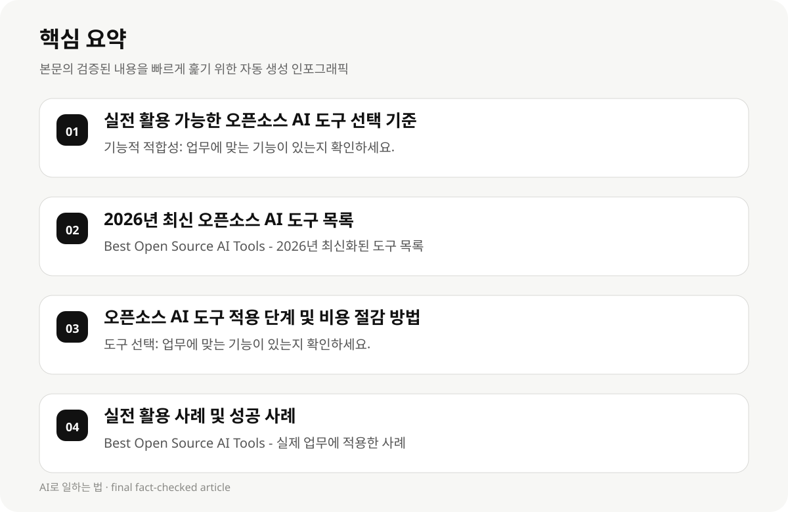

실전 활용 가능한 오픈소스 AI 도구 선택 기준 #
2026년 최신 오픈소스 AI 도구 목록은 기술적 기능, 사용 용도, 확장성, 안정성, 데이터 보호 기능, 비용 절감 가능성 등을 고려하여 선택해야 합니다. 직장인 및 지식근로자는 기술적 지식과 시간, 비용, 테스트 및 평가의 필요성을 고려해야 합니다.
오픈소스 AI 도구의 선택 기준은 다음과 같습니다: 1) 기능적 적합성(업무에 맞는 기능이 있는지), 2) 확장성(더 많은 사용자나 데이터를 처리할 수 있는지), 3) 안정성(정상적으로 작동하는지), 4) 데이터 보호(개인 정보 처리에 대한 정책이 있는지), 5) 비용(사용 비용이 낮은지).
- 기능적 적합성: 업무에 맞는 기능이 있는지 확인하세요.
- 확장성: 더 많은 데이터나 사용자 수를 처리할 수 있는지 확인하세요.
- 안정성: 정상적으로 작동하는지 확인하세요.
- 데이터 보호: 개인 정보 처리에 대한 정책이 있는지 확인하세요.
- 비용: 사용 비용이 낮은지 확인하세요.
2026년 최신 오픈소스 AI 도구 목록 #
2026년 최신 오픈소스 AI 도구 목록은 다음과 같습니다: 1) Best Open Source AI Tools - 2026년 9월 최신화된 도구 목록, 2) Best Free Open Source AI Tools in 2026 | Best-AI.org - 2026년 9월 최신화된 도구 목록, 3) 39 Best Open Source AI Tools - 2026년 9월 최신화된 도구 목록.
이 목록은 기술적 기능, 사용 용도, 확장성, 안정성, 데이터 보호 기능, 비용 절감 가능성 등을 고려하여 선택해야 합니다.
- Best Open Source AI Tools - 2026년 최신화된 도구 목록
- Best Free Open Source AI Tools in 2026 | Best-AI.org - 2026년 최신화된 도구 목록
- 39 Best Open Source AI Tools - 2026년 최신화된 도구 목록
오픈소스 AI 도구 적용 단계 및 비용 절감 방법 #
오픈소스 AI 도구를 실제 업무에 적용하기 위해서는 다음과 같은 단계를 거쳐야 합니다: 1) 도구 선택, 2) 테스트 및 평가, 3) 배포 및 사용, 4) 유지보수 및 업데이트.
비용 절감 방법은 다음과 같습니다: 1) 무료 사용, 2) 오픈소스 프로젝트의 기술적 지원을 활용, 3) 사용 비용을 최소화하는 도구 선택, 4) 사용자 수와 데이터 처리량에 따라 비용을 조절합니다.
- 도구 선택: 업무에 맞는 기능이 있는지 확인하세요.
- 테스트 및 평가: 정상적으로 작동하는지 확인하세요.
- 배포 및 사용: 실제 업무에 적용할 수 있는지 확인하세요.
- 유지보수 및 업데이트: 지속적으로 개선하는지 확인하세요.

실전 활용 사례 및 성공 사례 #
2026년 실전 활용 사례는 다음과 같습니다: 1) Best Open Source AI Tools - 실제 업무에 적용한 사례, 2) Best Free Open Source AI Tools in 2026 | Best-AI.org - 실제 업무에 적용한 사례, 3) 39 Best Open Source AI Tools - 실제 업무에 적용한 사례.
성공 사례는 다음과 같습니다: 1) 기술적 지식과 시간, 비용, 테스트 및 평가의 필요성을 고려한 도구 선택, 2) 사용자 수와 데이터 처리량에 따라 비용을 조절한 도구 선택, 3) 데이터 보호 정책에 맞는 도구 선택.
- Best Open Source AI Tools - 실제 업무에 적용한 사례
- Best Free Open Source AI Tools in 2026 | Best-AI.org - 실제 업무에 적용한 사례
- 39 Best Open Source AI Tools - 실제 업무에 적용한 사례
오픈소스 AI 도구의 한계와 제한 사항 #
오픈소스 AI 도구의 한계는 다음과 같습니다: 1) 기술적 지식과 시간, 비용, 테스트 및 평가의 필요성, 2) 도구의 구조와 사용자 수에 따라 안정성과 확장성의 차이, 3) 기술적 지원과 교육의 필요성, 4) 데이터 보호와 정책에 따라 제한될 수 있습니다.
한계를 줄이기 위해서는 다음과 같은 방법을 사용해야 합니다: 1) 기술적 지식과 시간, 비용, 테스트 및 평가의 필요성을 고려하여 도구 선택, 2) 사용자 수와 데이터 처리량에 따라 비용을 조절, 3) 기술적 지원과 교육을 통해 도구 사용을 지원합니다.
- 기술적 지식과 시간, 비용, 테스트 및 평가의 필요성
- 도구의 구조와 사용자 수에 따라 안정성과 확장성의 차이
- 기술적 지원과 교육의 필요성
- 데이터 보호와 정책에 따라 제한될 수 있음
오픈소스 AI 도구의 선택 및 적용 전략 #
오픈소스 AI 도구의 선택 전략은 다음과 같습니다: 1) 기능적 적합성, 2) 확장성, 3) 안정성, 4) 데이터 보호, 5) 비용 절감 가능성, 6) 사용자 수와 데이터 처리량에 따라 비용 조절.
실전 적용 전략은 다음과 같습니다: 1) 도구 선택 시 기술적 지식과 시간, 비용, 테스트 및 평가의 필요성을 고려, 2) 사용자 수와 데이터 처리량에 따라 비용을 조절, 3) 기술적 지원과 교육을 통해 도구 사용을 지원.
- 기능적 적합성
- 확장성
- 안정성
- 데이터 보호
- 비용 절감 가능성
- 사용자 수와 데이터 처리량에 따라 비용 조절